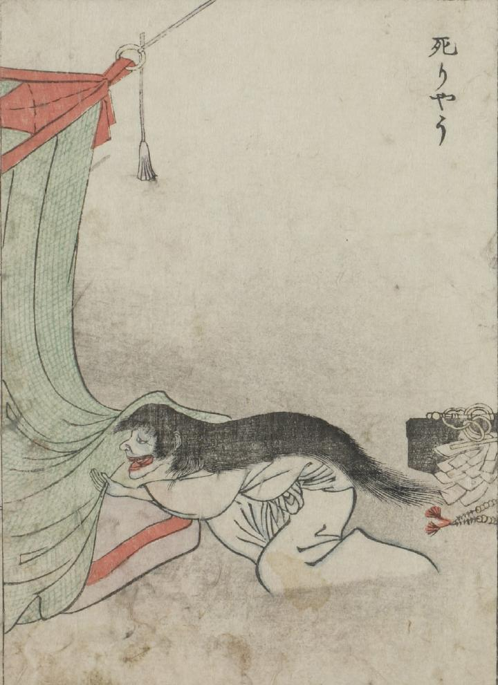

死霊；シリョウ，蚊帳；カヤ

蚊帳の中に死霊が忍びこもうとしている。死霊は白衣で、髪が長く口が耳まで裂けてる。死霊の後ろには幣帛、数珠、錫状などが置いてある。
出典：親書誌：U426_nichibunken_0051：怪物画本；カイブツエホン／日付：2006／資源識別子：U426_nichibunken_0051_0027_0000
Copyright (c)2010- International Research Center for Japanese Studies, Kyoto, Japan. All rights reserved.